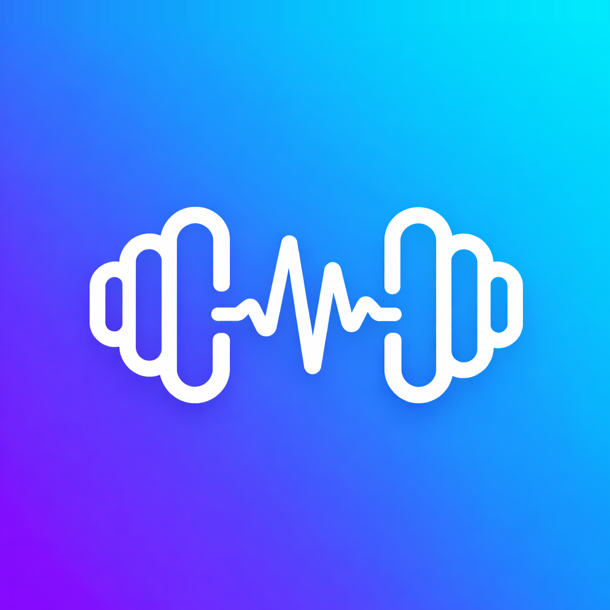

WTalkie is your workout companion. Speak naturally to plan workouts, log sets, and track progress — hands-free.
We believe exercise and music share the same heartbeat. A great set has tempo. A run has cadence. Every rep is a beat. WTalkie exists because we see rhythm as the thread that connects how we move and how we feel — and we want to help you find yours.
WTalkie stays out of your way until you need it. Just speak, and it handles the rest.
Your hands are busy. Just talk. Say what you did, what you want to do next, or ask a question. WTalkie listens and responds.
Strength, endurance, CrossFit, bodyweight — it doesn't matter. WTalkie adapts to however you train, not the other way around.
Every session, every set, every PR — saved and synced. Look back at your progress whenever you want, from any device.
WTalkie doesn't tell you what to do. Madcow 5×5 on Monday, CrossFit on Wednesday, swimming on Friday — it doesn't matter. You train your way. WTalkie just keeps up.
Between sets your hands are chalked up or gripping a bar. Just speak. That's how humans are supposed to interact with their tools — naturally, without looking at a screen.
No social feeds. No gamification. No coaching plans you didn't ask for. Just your exercises, your history, your progress — and nothing else getting in the way.
I go to the gym three times a week. I swim. I play tennis and pickleball. I snowboard. I run Madcow 5×5. I do CrossFit. I train for strength, for endurance, for fun — whatever the day calls for. I tried every workout app out there, and they all wanted to be my coach, my planner, my social network. I didn't need any of that. I just wanted something minimal but enough — something that listens when I talk, logs what I did, and gets out of the way. So I built WTalkie.
Available now on the App Store.
Download on the App Store